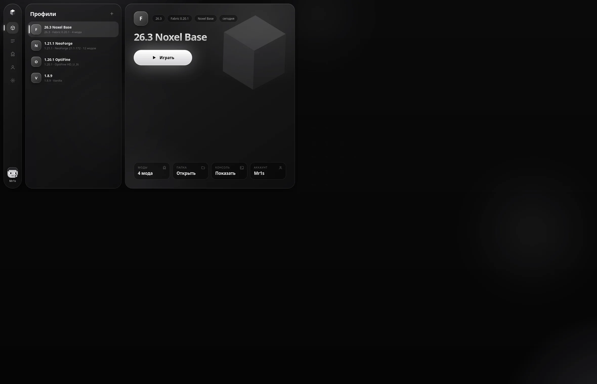
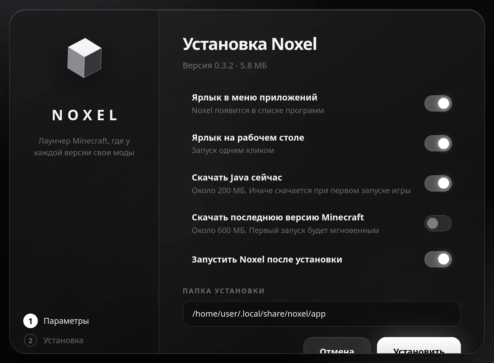
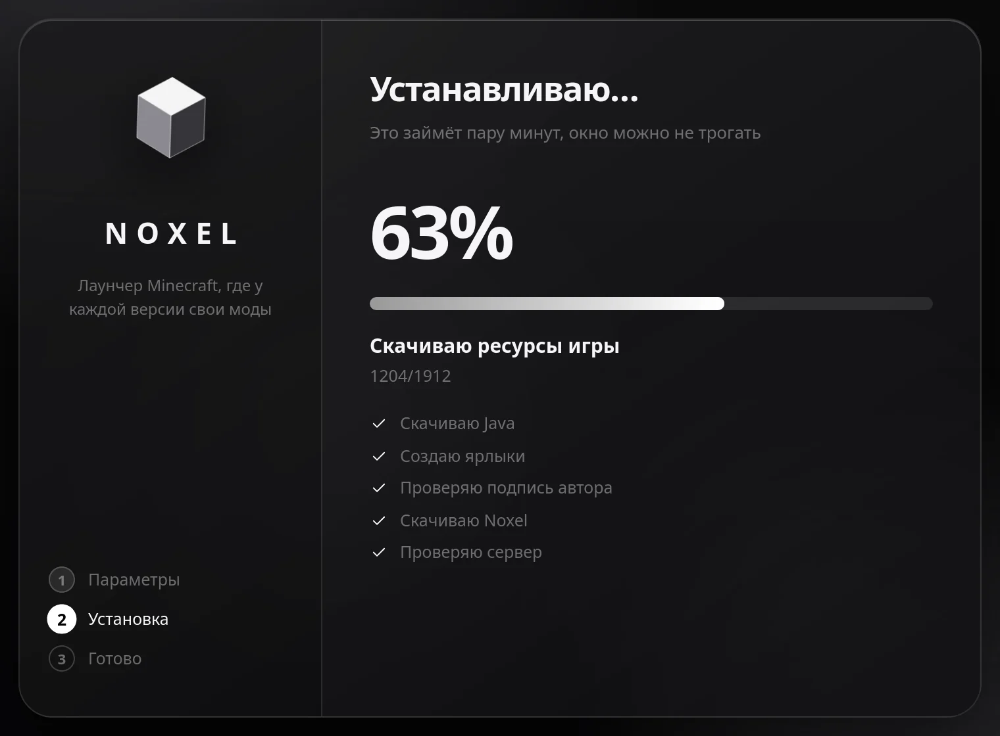

Noxel — лаунчер, где у каждой версии свои моды, миры и настройки. Переключился на другую версию — ничего удалять и переносить не нужно.

Мы убрали ручную работу: поиск на сайтах, перенос файлов, проверку версий и разбор вылетов.
У профиля своя папка: моды, миры, ресурспаки, настройки. Играй на 1.20.1 с Forge и на 26.3 с Fabric, не удаляя ничего вручную.
Noxel Base ставит Fabric с Fabric API, Mod Menu, Sodium и Iris. Есть сборки для максимума кадров. Зависимости подтягиваются сами.
Modrinth и CurseForge вперемешку. Один и тот же мод показывается один раз, а версии (релиз, бета, альфа) собраны с обоих сайтов.
Нажми на мод: описание, скриншоты, версии, лицензия. Сайт открывать не нужно. Видно, где мод уже скачан: «Скачано на 1.21.1 NeoForge».
Загрузчик ставится сам. Выбираешь версию игры, а лаунчер проверяет, какие загрузчики для неё существуют.
Фильтр «Клиентские» оставляет моды, которые работают на любых серверах: оптимизация, подсветка, миникарта.
Локальные, Microsoft и аккаунты Noxel с паролем. Анимированная объёмная модель, история скинов, время игры и серверы.
Список рекомендуемых модов для популярных серверов лежит в облаке и обновляется без переустановки лаунчера.
Игра упала? Лаунчер читает лог, находит, какого мода не хватает или какой устарел, и даёт кнопку «Найти мод».
Лаунчер сам вводит /register и /login и ставит скин, как только сервер попросит. Пароль и скин включаются отдельно.
Популярные серверы с онлайном и пингом, список нужных модов и кнопка «Зайти» одним нажатием.
График времени игры, самые длинные сессии, любимые серверы и живой таймер текущей игры.
Добавляй друзей по нику, открывай свой мир, и они заходят к тебе как по локальной сети, даже без лицензии.
Сохрани мир в облако и отправь ссылку: друг увидит страницу с описанием и скачает мир. Можно подключить своё облако по WebDAV.
Кнопка «Друзья» в меню Esc: список друзей, открыть мир, зайти к другу и поделиться миром, не выходя из Minecraft.
Чёрно-белая палитра, стеклянные панели и плавные анимации. Скриншоты сняты прямо с лаунчера.
Сравниваем не с конкретными программами, а с тем, как моды обычно ставят вручную.
Запустил, поставил галочки, дождался ползунка. Установщик сам скачает лаунчер, проверит подпись автора и создаст ярлыки.


Выбери свою систему
Установщик с окном: галочки, ползунок, ярлыки. Подходит для Arch, Ubuntu, Fedora и других дистрибутивов с WebKitGTK 4.1.
SHA-256 установщика:
БЕТА. Версия для Windows 10 и 11 с таким же установщиком. Если Windows покажет «Неизвестный издатель», нажми «Подробнее» → «Выполнить в любом случае»: у Noxel пока нет платного сертификата подписи. Контрольная сумма установщика указана ниже.
SHA-256 установщика:
Бесплатно, без рекламы и без телеметрии. Лаунчер обращается только к серверам Mojang, Modrinth, CurseForge и к серверу Noxel (аккаунты Noxel, скины, список серверов и обновления).
Для игры в одиночку и на серверах без проверки лицензии достаточно локального аккаунта по нику. Если у тебя есть лицензия, можно войти через Microsoft. Мы не помогаем обходить защиту серверов.
Нет. Лаунчер сам скачивает с серверов Mojang ту версию Java, которая нужна выбранной версии игры. Можно указать и свою.
Да. Обновляется только сам лаунчер, а данные лежат отдельно: профили, моды, миры, аккаунты и Java не затрагиваются.
Скин загружается на сервер Noxel и получает постоянную ссылку. Её можно передать плагину командой /skin url: в лаунчере для этого есть кнопка. Плащи видны только в лаунчере и клиентах с модами для плащей, обычный клиент другим игрокам плащ не покажет.
Версия для Windows 10 и 11 доступна как бета: установщик, обновления в один клик, друзья и общий мир работают так же, как на Linux. Бета означает, что возможны ошибки, особенно на редких конфигурациях.
Windows и браузеры предупреждают о любых программах без цифровой подписи от платного сертификата и без истории скачиваний. Noxel не содержит вирусов, но такое предупреждение пока нормально: нажми «Подробнее» → «Выполнить в любом случае». Для проверки сравни SHA-256 файла с указанным на странице скачивания.